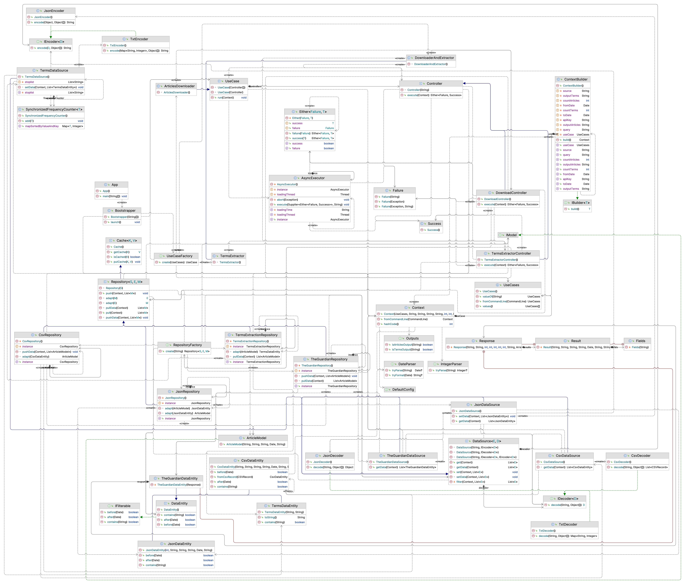

Design Model
Modello Strutturale Statico
Il modello strutturale statico è stato realizzato utilizzando il diagramma delle classi UML.
Class Diagram

Modello Strutturale Dinamico
Il modello strutturale dinamico è stato realizzato utilizzando il diagramma delle sequenze UML.
Sequence Diagram